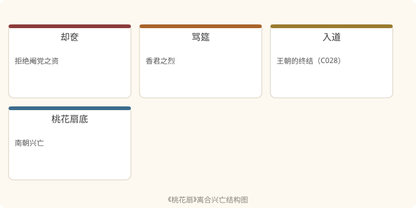

桃花扇
一、基本信息
| 作者 | 孔尚任 |
|---|---|
| 成书/出版 | 康熙三十八年（1699）六月脱稿（光明日报 C028） 《兴亡一系桃花扇》（光明日报）（官方媒体） |
| 国别/地区 | 中国 |
| 时代 | 古代 · 清（康熙） |
| 体裁 | 传奇（戏曲） |
| 语言 | 汉语（曲牌体） |

《桃花扇》离合兴亡结构图（主题·结构图）
二、创作背景
光明日报（C028）：'《桃花扇》乃明清传奇压卷之作'；孔尚任'穷二十余年之心力，三易其稿'；脱稿后'王公荐绅，莫不借钞，时有纸贵之誉'；康熙看后不悦、次年将其遣返原籍。
主旨：'借离合之情，写兴亡之感'（C028）；'南朝兴亡，遂系之桃花扇底'（C028）。
三、内容脉络
复社名士侯方域与秦淮歌伎李香君的悲欢离合，置于复社文人与马士英、阮大铖等阉党余孽的冲突中（C028）。
结局虚构'入道'：侯李面对残破江山'修真学道'，宣告王朝历史的终结（C028）。
四、主要人物表
| 人物 | 身份 | 说明 |
|---|---|---|
| 侯方域 | 复社名士 | 离合线（C028） |
| 李香君 | 秦淮歌伎 | 却奁·骂筵（通说待核） |
| 阮大铖 | 阉党余孽 | 反派（C028） |
五、主题与艺术特点
- 兴亡之感压倒离合之情（C028）。
- 历史剧的真实原则（通说待核——凡例语）。
- 扇为兴亡之证（C028）。
六、影响与评论
- 光明日报：明清传奇压卷之作；'借离合之情，写兴亡之感'（C028）。
《兴亡一系桃花扇》（光明日报）（官方媒体） - 2006年青春版昆剧《1699·桃花扇》首演（C028 语境）。
《兴亡一系桃花扇》（光明日报）（官方媒体）
七、阅读建议
难点
- 南明史事（弘光朝）注释。
- 四十余出出目与人物。
- 《桃花扇》（人民文学出版社，通说待核）。
先读《却奁》《骂筵》《余韵》（通说）。
八、待核实
- 四十四出出目核对。
- 孔尚任生卒（1648—1718）与孔子后裔身份待核。
- 《余韵》出苏柳生等人物核对。
本页主要来源
孔尚任的其他收录作品：桃花扇